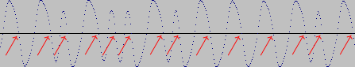

Back to C64 Tape Info Central

The C64 senses when the waveform goes from a value greater than zero to a value lesser than zero. This event is called trigger and causes an interrupt request to be delivered to CIA#1. This IRQ can be handled by an interrupt handler, or simply discovered by testing bit 4 of location $DC0D. The triggers are indicated by red arrows in the figure. The information is stored in the time interval between a trigger and the previous one. The simplest and most used way to code information is this: if the time interval is shorter than a given duration, called threshold, a 0 bit is received, if the time interval is longer than the threshold, a 1 bit is received. The kernel ROM loader uses a more complicated coding, with three possible lengths (and it is a very slow and inefficient loader).
Now you know how to turn a waveform into a stream of bits. The figure depicts the sequence 1010010111101. Two questions now arise:
Now let's answer question 2. At the start, the loader is not synchronized: it does not know which is the first bit in the byte. So, it implements a shift register, that is a byte where the last bit arrived is stored in the rightmost (least significant) position, and, as new bits arrive, it is shifted left (towards the most significant position).
most least significant -> 10011001 <- significant (oldest) (newest) bit bitThe initial state of the register is not significant. When a new bit arrives:
An example: Turbo tape 64 has a lead-in byte $02 (binary 00000010), a sync byte $09 (binary 00001001) and a sync sequence $08,$07,$06,$05,$03,$02,$01. Comes the stream
0010100110010010001110000000001000000010000000100000001000001001
0000100000000111000001100000010100000100000000110000001000000001
00101001
01010011
10100110
01001100
10011001
00110010
01100100
11001001
10010010
00100100
01001000
10010001
00100011
01000111
10001110
00011100
00111000
01110000
11100000
11000000
10000000
00000000
00000000
00000001
00000010 <- Got the fisrt synchronization!
Now let's start collecting whole bytes
00000010
00000010
00000010
00001001 <- Sync byte! Now check sync sequence
00001000
00000111
00000110
00000101
00000100
00000011
00000010
00000001 <- Sync sequence successful, now we are synchronized.
This page is maintained by Fabrizio Gennari
Back to C64 Tape Info Central